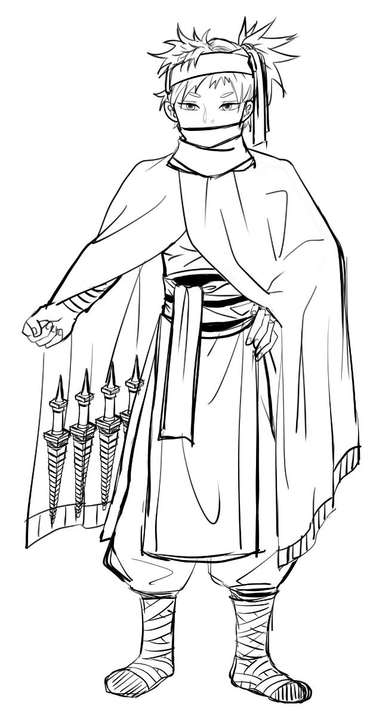

| 角色卡 - Sienna |
| 名稱 | Sienna |
| 種族 性別 | 女性 精靈族 |
| 年齡 | 460 |
| 身型 | 身高193 體重99kg |
| 職業 | 商人 有著靈活的談判討價技巧 |
| 說話方式 | 講話很謹慎 |
| 口頭禪 | 活下去才是最重要的 |
| 個性 | 個性謹慎沉著、少話、但是隨時會注意周遭、隨時警戒，連睡覺的時候都是警戒狀態 |
| 信念 | 不擇手段也要活下去 |
| 開場時的缺憾 | 經歷過許多小隊，大量隊友死亡，理解到活下去才有其他可能 |
| 故事中的目標 | 在各地之間運送物資，雖然本身有很強的戰鬥能力，但是除非遇到特殊情況，不然不會出手。有著一流的交際手腕，對於戰爭時期調度物資和幫助弱勢的人逃離戰區有很大的貢獻 |
| 側寫 | 帶有許多暗器，長年的戰鬥經驗體悟到只有不擇手段的人可以活下。 |
| 簡史 | 查不到底細，前幾次大戰都可以看到其交易補給品的身影，不屬於任何一方陣營的中立 |
| 原型參考 | 發想：狼辛 - 伊弗•波倫 |
| 形象概念 | 頭上戴著貝雷帽，還有一件寬鬆的大衣外套 肌肉緊實發達，但是口罩遮著臉部是不讓人容易認出，衣服包覆全身。內搭服裝造型接近武僧 頻繁有在做體能訓練， 腰間兩側有小刀，腿上有煙霧彈、毒針  繪師：minu |
 PosetMage
PosetMage